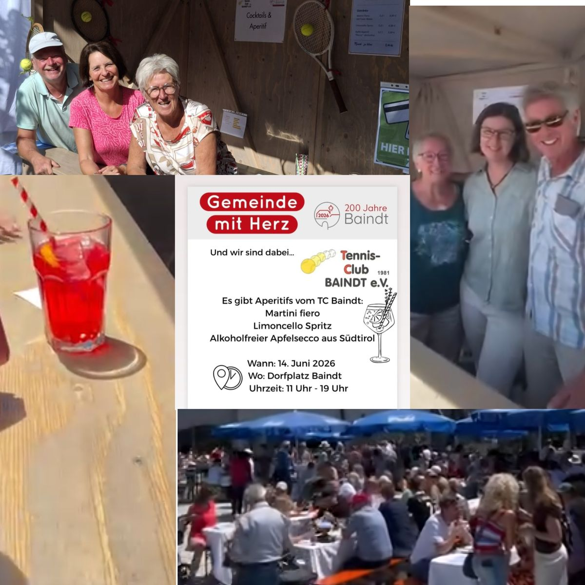
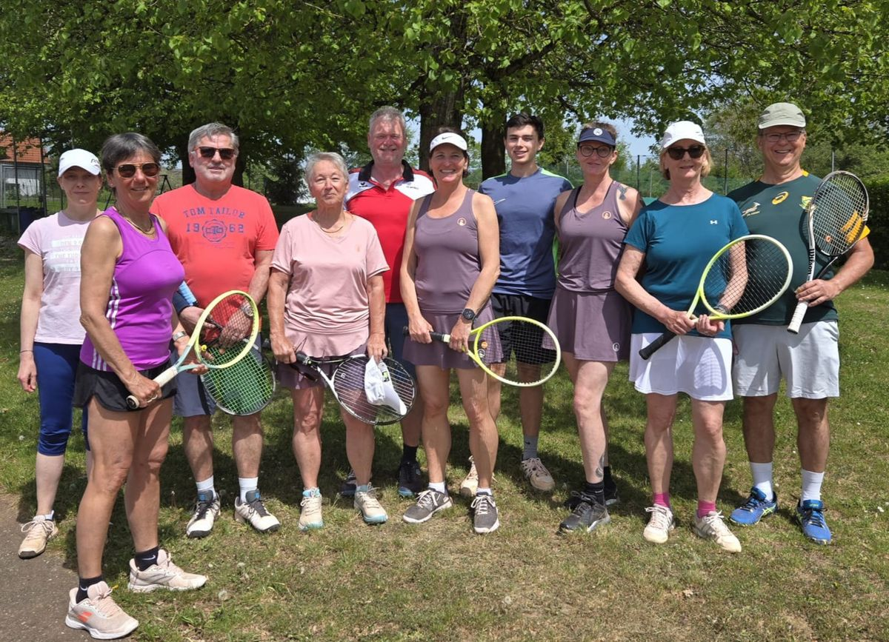
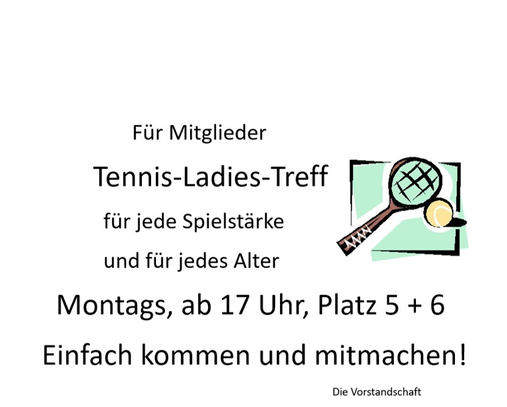
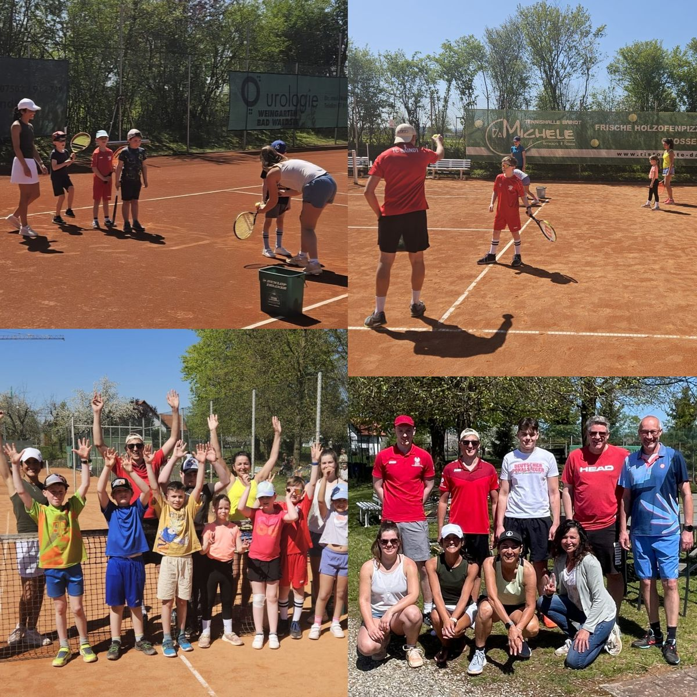
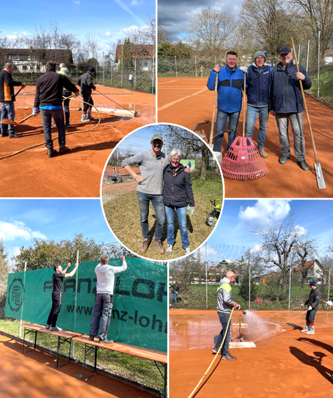
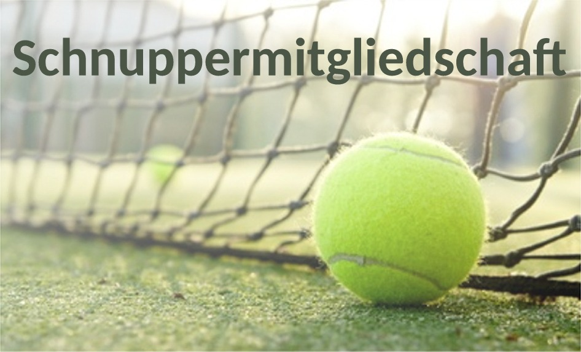

200-Jahr-Feier auf dem Dorfplatz - der TC war dabei! Herzlichen Dank allen Helfer*innen!
Herzlich willkommen beim
Tennis in Baindt seit 1981 – sechs Sandplätze, ein lebendiges Vereinsleben und Tennis für alle.

200-Jahr-Feier auf dem Dorfplatz - der TC war dabei! Herzlichen Dank allen Helfer*innen!

Offizieller Start in die Saison am 2. Mai Eröffnungs-Bändelesturnier
Vereinsmeisterschaften 2026: Die Gruppeneinteilung Einzel und Doppelpaarungen hängen am Vereinsheim aus!

Ladies-Treff

TENNIS FÜR ALLE „Hineinschnuppern in den Tennissport“ am 25.04.2026 Große Begeisterung bei den Teilnehmer*innen. Ein rundum gelungener Nachmittag. Herzlichen Dank dem Orga-Team und allen Helfer*innen!

Viele fleißige Hände beim Plätze richten am 27. und 28.03.26. Herzlichen Dank euch!
Saison 2025 →Folgt uns auf Instagram!
@tcbaindt →